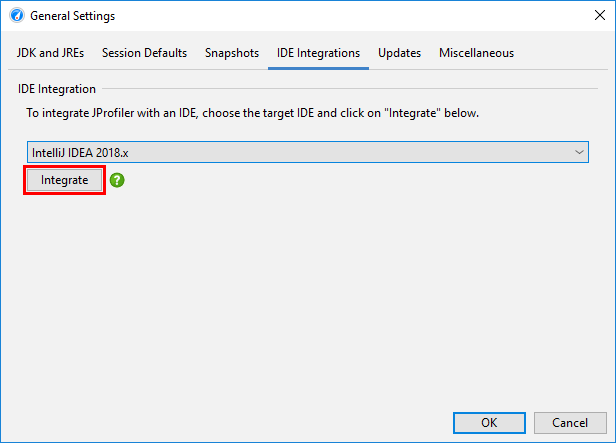

To profile a JVM, JProfiler's profiling agent has to be loaded into the JVM. This can happen in two different ways:
By specifying an -agentpath VM parameter in the start script or by using the attach API
to load the agent into an already running JVM.
JProfiler supports both modes. Adding the VM parameter is the preferred way to profile and is used by the integration wizards, the IDE plugins and session configurations that launch a JVM from within JProfiler. Attaching works both locally as well as remotely over SSH.
It is useful to understand how the VM parameter that loads the profiling agent is composed. -agentpath
is a generic VM parameter provided by the JVM for loading any kind of native library that uses the JVMTI interface.
Because the profiling interface JVMTI is a native interface, the profiling agent must be a native library. This means
that you can only profile on the
explicitly supported platforms.
32-bit and 64-bit JVMs also need different native libraries.
Java agents, on the other hand, are loaded with the -javaagent VM parameter and only have
access to a limited set of capabilities.
After -agentpath:, the full path name to the native library is appended. There is an equivalent
parameter -agentlib: where you only specify the platform-specific library name, but then you
have to make sure that the library is contained in the library path. After the path to the library, you can add an
equals sign and pass options to the agent, separated by commas. For example, on Linux, the whole parameter could
look like this:
-agentpath:/opt/jprofiler10/bin/linux-x64/libjprofilerti.so=port=8849,nowait
The first equals sign separates the path name from the parameters, the second equals sign is part of the parameter
port=8849. This common parameter defines the port on which the profiling agent is listening
to connections from the JProfiler GUI. 8849 is actually the default port, so you can also omit that parameter.
If you want to profile multiple JVMs on the same machine, you have to assign different ports, though.
The IDE plugins and the locally launched sessions assign this port automatically, for integration wizards
you have to choose the port explicitly.
The second parameter nowait tells the profiling agent not to block the JVM at startup and
wait for a JProfiler GUI to connect. Blocking at startup is the default, because the profiling agent does not
receive its profiling settings as command line parameters but from the JProfiler GUI or alternatively from a config
file. The command line parameters are only for bootstrapping the profiling agent, telling it how to get started
and for passing debug flags.
By default, the JProfiler agent binds the communication socket to all available network interfaces. If this is not
desirable for security reasons, you can add the option address=[IP address] in order to select
a specific interface.
Like "Run configurations" in an IDE, you can configure locally launched sessions directly in JProfiler. You specify the class path, the main class, working directory, VM parameters and arguments and JProfiler launches the session for you. All the demo sessions that ship with JProfiler are locally launched sessions.
A special launch mode is "Web Start" where you select the URL of the JNLP file and JProfiler will launch a JVM to profile it.
Locally launched sessions can be converted to standalone sessions with the conversion wizards by invoking
Session->Conversion Wizards from the main menu. Convert Application Session to Remote
simply creates a start script and inserts the -agentpath VM parameter into the Java call.
Convert Application Session to Offline creates a start script for offline profiling
which means that the config is loaded on startup and the JProfiler GUI is not required.
Convert Application Session to Redistributed Session does the same thing, but creates a directory
jprofiler_redist next to it that contains the profiling agent as well as the config file so you can
ship it to a different machine where JProfiler is not installed.
If you develop the profiled application yourself, consider using an IDE integration instead of a launched session. It will be more convenient and give you better source code navigation. If you do not develop the application yourself, but already have a start script, consider using the remote integration wizard. It will tell you the exact VM parameter that you have to add to the Java invocation.
JProfiler's integration wizards handle many well-known third party containers with start scripts or config files that can be modified programatically to include additional VM parameters. For some products, start scripts can be generated where VM parameters are passed as arguments or via environment variables.
In all cases, you have to locate some specific file from the third-party product, so JProfiler has the necessary context to perform its modifications. Some generic wizards only give you instructions on what you have to do in order to enable profiling.
The first step in each integration wizard is the choice whether to profile on the local machine or on a remote machine. In the case of the local machine you have to provide less information, because JProfiler already knows the platform, where JProfiler is installed and where its config file is located.
An important decision is the "startup mode" that was discussed above. By default, the profiling settings are transmitted from the JProfiler UI at startup, but you can also tell the profiling agent to let the JVM start immediately. In the latter case, the profiling settings can be applied once the JProfiler GUI connects.
However, you can also specify a config file with the profiling settings which is much more efficient. This is done on the Config synchronization step. The main problem in this case is that you have to synchronize the config file with the remote side each time you edit the profiling settings locally. The most elegant way is to connect to the remote machine via SSH on the Remote address step, then the config file can be transferred automatically via SSH.
At the end of the integration wizard, a session will be created that starts profiling and - in the non-generic cases - also starts the third party product, such as an application server.
External start scripts are handled by the Execute start script and Execute stop script options on the Application settings tab of the session configuration dialog and URLs can be shown by selecting the Open browser with URL check box. This is also the place where you can change the address of the remote machine and the config synchronization options.
The integration wizards all handle cases where the profiled JVM is running on a remote machine. However,
when a config file or start script has to be modified, you have to copy it to your local machine and
transfer modified versions back to the remote machine. It may be more convenient to directly run the command line
tool jpintegrate on the remote machine and let it perform its modifications in place.
jpintegrate requires a full installation of JProfiler and has the same JRE requirements
as the JProfiler GUI.
When an error occurs while starting a remote profiling session, see the trouble-shooting guide for a check list of steps that you can take to fix the problem.
The most convenient way to profile an application is through an IDE integration. If you usually start your application from your IDE during development, the IDE already has all the required information and the JProfiler plugin can simply add the VM parameter for profiling, start JProfiler if necessary and connect the profiled JVM to a JProfiler main window.
All IDE integrations are contained in the integrations directory in the JProfiler installation.
In principle, the archives in that directory can be installed manually with the plugin installation mechanisms
in the respective IDEs. However, the preferred way to install IDE integrations is to invoke
Session->IDE integrations from the main menu.

Profiling sessions from the IDE do not get their own session entry in JProfiler, because such a session could not be started from the JProfiler GUI. Profiling settings are persisted on a per-project or a per-run-configuration basis, depending on the settings in the IDE.
When connected to an IDE, JProfiler shows a window switcher in the tool bar that makes it easy to jump back to the associated window in the IDE. All the Show Source actions now show the source directly in the IDE instead of the built-in source viewer in JProfiler.
IDE integrations are discussed in detail in a later chapter.
You do not necessarily have to decide beforehand that you intend to profile a JVM. With the attach functionality in JProfiler, you can select a running JVM and load the profiling agent on the fly. While attach mode it convenient, it has a couple of drawbacks that you should be aware of:
The Quick Attach tab in JProfiler's start center lists all JVMs that can be profiled. The background color of the list entries indicates whether a profiling agent has already been loaded, whether a JProfiler GUI is currently connected or if offline profiling has been configured.
When you start a profiling session, you can configure profiling settings in the session settings dialog. When you repeatedly profile the same process, you do not want to re-enter the same configuration again and again, so a persistent session can be saved when you close a session that has been created with the quick attach feature. The next time you want to profile this process, start the saved session from the Open Session tab instead of the Quick Attach tab. You will still have to select a running JVM, but the profiling settings are the same ones that you have already configured before.
The attach API in the JVM requires that the invoking process runs as the same user as the process that you want to attach to, so the list of JVMs that are displayed by JProfiler is limited to the current user. Processes launched by different users are mostly services. The way to attach to services differs for Windows and Unix-based platforms.
On Windows, the attach dialog has a Show Services button that lists all locally running services. JProfiler launches bridge executables to be able to attach to those processes no matter what user they are running with.
On Unix-based platforms including macOS, you can execute the command line tool
jpenable as a different user with su or sudo,
depending on your Unix variant or Linux distribution. On macOS and Debian-based Linux distributions like Ubuntu,
sudo is used.
With sudo, call
sudo -u userName jpenable
su userName -c jpenable
jpenable will let you select JVMs and tell you the port on which the profiling agent
is listening. On the Quick Attach tab of the start center, you can then select the On another computer
option and configure a direct connection to localhost and the given profiling port.
The most demanding setup for profiling is remote profiling - the JProfiler GUI runs on your local machine and the profiled JVM on another machine. For a setup where you pass the -agentpath VM parameter to the profiled JVM, you have to install JProfiler on the remote machine and set up a remote session on your local machine. With the remote attach functionality in JProfiler, no such modifications are required, you just need SSH credentials to log into the remote machine.
The SSH connection enables JProfiler to upload the agent package that was discussed in the "Installing JProfiler" help topic and execute the contained command line tools on the remote machine. You don't need SSH to be set up on your local machine, JProfiler ships with its own implementation. In the most straightforward setup you just define host, user name and authentication.
With an SSH connection, JProfiler can perform an automatic discovery of running JVMs or connect to a specific port
where a profiling agent is already listening. For the latter case, you can use jpenable or
jpintegrate on the remote machine as described above and prepare a special JVM for
profiling. Then, the SSH remote attach can be configured to directly connect to the configured profiling port.
Automatic discovery will list all JVMs on the remote machine that have been started as the SSH login user. In most cases
this will not be the user that has started the service that you would like to profile. Because users that
start services usually are not allowed for SSH connections, JProfiler adds a Switch User button that
lets you use sudo or su to switch to that user.
In complex network topologies, you sometimes cannot connect directly to the remote machine. In that case, you can tell JProfiler to connect with a multi-hop SSH tunnel in the GUI. At the end of the SSH tunnel you can make one direct network connection, usually to "127.0.0.1".
HPROF snapshots can only be taken for JVMs that were started with the SSH login user. This is because HPROF snapshots require an intermediate file that is written with the access rights of the user that has started the JVM. For security reasons, it is not possible to transfer file rights to the SSH login user for download. No such restriction exists for full profiling sessions.
In the JVM selection table, the displayed process name is the main class of the profiled JVM together with its arguments. For launchers generated by exe4j or install4j, the executable name is displayed.
If you wish to set the displayed name yourself, for example because you have several processes with the same
main class that would otherwise be undistinguishable, you can set the VM parameter
-Djprofiler.displayName=[name]. If the name contains spaces, use single quotes:
-Djprofiler.displayName='My name with spaces' and quote the entire VM parameter with double
quotes if necessary. In addition to -Djprofiler.displayName JProfiler also recognizes
-Dvisualvm.display.name.